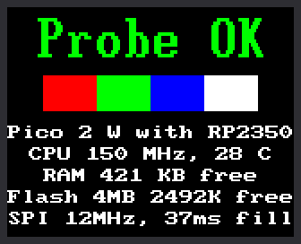

Lab 02: Kit Checkup

When you visit a doctor for a checkup, they listen to your heart and tap your knee. This program does the same for your kit. It is a probe: a tool that looks around and reports what it finds. It tests everything a program can test, prints a report, and draws a summary on the screen.
Run it first on a new kit, and again any time something stops working. The report tells you whether the trouble is the Pico, the files, the wiring, or your code. It never changes a file or a setting, so it is always safe to run.
Welcome to Lab 02
 Good clockmakers check their parts before they build. After this lab
you will own a tool that finds most kit problems faster than you can
guess at them. Let's make time tick!
Good clockmakers check their parts before they build. After this lab
you will own a tool that finds most kit problems faster than you can
guess at them. Let's make time tick!
What You Will Learn
- how a program can check the hardware it runs on
- how to read a long report one section at a time
- what a
WARNINGline means, and what to do about one - how RAM and flash, the Pico's two kinds of memory, differ
- why one check still needs your eyes
Run It
- Open
02-probe.pyin Thonny. - Click Run.
- Wait a few seconds. The report pauses at the line
scanning : ...while the Pico looks for WiFi networks. - Look at the kit's screen. It should match the picture above.
- Scroll up in Thonny's shell and read the report from the top.
The report is long, so here are a few lines from a real one. Each ...
marks whole sections left out, and the sections shown have more lines
too. Your ID numbers and network name will differ. The number before
dBm is signal strength: -50 is strong, -80 is weak.
1 2 3 4 5 6 7 8 9 10 11 12 13 14 15 16 17 18 19 20 21 22 23 24 25 26 27 28 29 30 | |
The Ten Checks
The report has ten numbered sections. Like a doctor, it checks one part at a time:
| Section | What it checks |
|---|---|
| 1. Processor and firmware | which chip is the Pico's brain, how fast it runs, and which MicroPython is on it |
| 2. RAM | how much working memory is free for your programs |
| 3. Flash | how big the storage chip is, how much is free, and the name of every file on it |
| 4. Kit files | whether each file the labs need is on the Pico |
| 5. Power and sensors | whether USB power is plugged in, and how warm the chip is |
| 6. WiFi | which WiFi networks are nearby, and whether yours is one of them |
| 7. Real-time clock | whether the Pico's clock has been set |
| 8. Knob and button | whether the knob's push switch and K0 both read "not pressed" |
| 9. SPI bus | how fast the Pico sends pictures to the screen |
| 10. Display | starts the screen, times how long painting all of it takes, and draws the summary |
Firmware is the software built into a gadget. On your Pico, that is MicroPython. SPI (Serial Peripheral Interface) is the set of wires that carries the picture to the screen. MHz (megahertz) means a million times a second, so this Pico's own clock ticks 150 million times a second.
RAM and Flash: Two Kinds of Memory
The Pico has two kinds of memory, and they do different jobs. RAM is short for random-access memory.
| RAM | Flash | |
|---|---|---|
| Like... | a whiteboard | a notebook |
| Holds | what a program is working on right now | your program files |
| How much | 520 KB | 4 MB |
| When you unplug the Pico | wiped clean | kept |
A KB (kilobyte) is 1,024 bytes, and one byte can hold one letter. A
MB (megabyte) is 1,024 KB. MicroPython uses some of the RAM itself.
The line heap free shows what is left for your programs. On a real kit
it said 431,456 bytes (421.3 KB).
How to Read a WARNING
Every check that fails calls one small function:
1 2 3 4 5 6 7 | |
warnings = []starts an empty list. You met lists in chapter 15 of Learning Python.- The line in triple quotes is a note that says what the function does.
warnings.append(message)saves the problem in the list for later.print(" WARNING:", message)prints it right away.
So a problem shows up three times: in the section that found it, in the Summary, and on the screen. The screen says "Warn: 1" in yellow instead of "Probe OK".
Read the words of a warning. Most of them name their own fix:
| The warning starts with | What to do |
|---|---|
lib/st7735s.py is not on the board |
A kit file is missing. Copy the kit's files to the Pico. |
the network in secrets.py ('MyHomeWiFi') was not found |
Check the spelling of the network name. The Pico only joins 2.4 GHz networks. |
K0 (GP11) reads pressed |
If nobody is pressing K0, its wire is in the wrong place. |
Why the Color Bars?
The Pico sends pictures to the screen, but the screen never answers. It is like mailing a letter with no return address: you cannot tell if it arrived. So the probe draws something only your eyes can check. Red, green, blue, and white bars in that order mean the screen works and its colors are right.
Try This
- Find the line
heap freein section 2. Is it more or less than 400 KB? - Run the probe twice. Which numbers change? Start with
chip tempandRTC time. - Hold K0 down, click Run, and keep holding until the screen changes. What do section 8 and the screen say now?
- Find
bar_width = 30near the end of the program and change it tobar_width = 40. Why do four bars now fill the screen exactly?
If It Doesn't Work
- Section 4 says
MISSING, and the screen stays blank. The kit's files are not on the Pico yet, so the probe skips sections 8 to 10. See Before You Start. - The Summary says all is good, but the screen is blank. The Pico cannot see its own screen. Check the screen's wires against How It Is Wired.
- The red and blue bars have traded places. Lab 03, the next lab, shows the setting to change.
Checkup Complete!
 You can now read a hardware report one section at a time and tell RAM
from flash. You can also trace a
You can now read a hardware report one section at a time and tell RAM
from flash. You can also trace a WARNING back to its cause. Next,
you will put your own words on the screen.
Next: Lab 03: Hello, World!